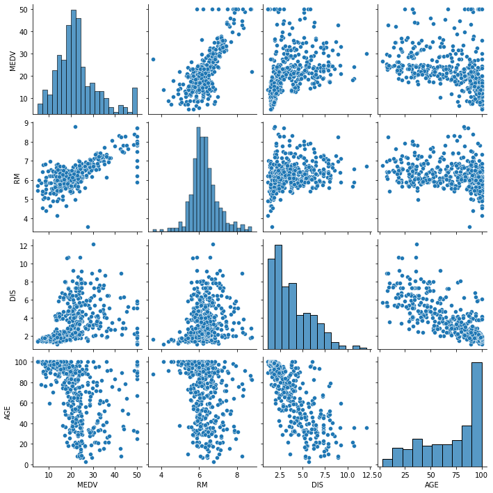
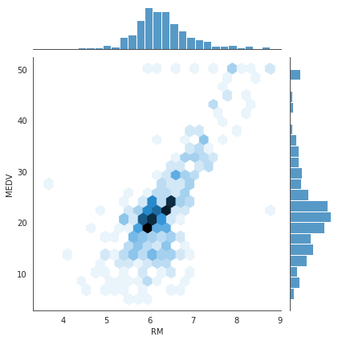
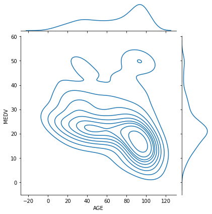
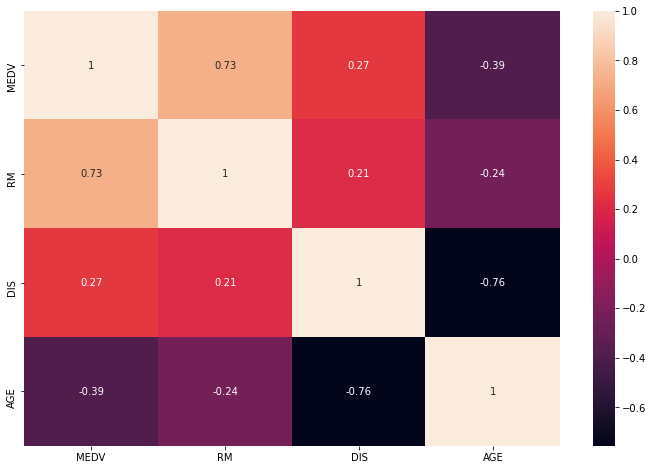

import scipy
import numpy as np
import pandas as pd
import seaborn as sns
from scipy import stats
import statsmodels.api as sm
import matplotlib.pyplot as plt
Dataset: https://www.kaggle.com/altavish/boston-housing-dataset
ZN - proportion of residential land zoned for lots over 25,000 sq.ft.
INDUS - proportion of non-retail business acres per town.
CHAS - Charles River dummy variable (1 if tract bounds river; 0 otherwise)
NOX - nitric oxides concentration (parts per 10 million)
RM - average number of rooms per dwelling
AGE - proportion of owner-occupied units built prior to 1940
DIS - weighted distances to five Boston employment centres
RAD - index of accessibility to radial highways
TAX - full-value property-tax rate per dollar 10,000
PTRATIO - pupil-teacher ratio by town
LSTAT - lower status of the population-percentage
MEDV - Median value of owner-occupied homes in $1000’s
house_data = pd.read_csv('datasets/HousingData.csv')
house_data.head(5)
| CRIM | ZN | INDUS | CHAS | NOX | RM | AGE | DIS | RAD | TAX | PTRATIO | B | LSTAT | MEDV | |
|---|---|---|---|---|---|---|---|---|---|---|---|---|---|---|
| 0 | 0.00632 | 18.0 | 2.31 | 0.0 | 0.538 | 6.575 | 65.2 | 4.0900 | 1 | 296 | 15.3 | 396.90 | 4.98 | 24.0 |
| 1 | 0.02731 | 0.0 | 7.07 | 0.0 | 0.469 | 6.421 | 78.9 | 4.9671 | 2 | 242 | 17.8 | 396.90 | 9.14 | 21.6 |
| 2 | 0.02729 | 0.0 | 7.07 | 0.0 | 0.469 | 7.185 | 61.1 | 4.9671 | 2 | 242 | 17.8 | 392.83 | 4.03 | 34.7 |
| 3 | 0.03237 | 0.0 | 2.18 | 0.0 | 0.458 | 6.998 | 45.8 | 6.0622 | 3 | 222 | 18.7 | 394.63 | 2.94 | 33.4 |
| 4 | 0.06905 | 0.0 | 2.18 | 0.0 | 0.458 | 7.147 | 54.2 | 6.0622 | 3 | 222 | 18.7 | 396.90 | NaN | 36.2 |
house_data.shape
(506, 14)
house_data.columns
Index(['CRIM', 'ZN', 'INDUS', 'CHAS', 'NOX', 'RM', 'AGE', 'DIS', 'RAD', 'TAX',
'PTRATIO', 'B', 'LSTAT', 'MEDV'],
dtype='object')
house_data = house_data.drop(['CRIM', 'B'], axis=1)
house_data.head()
| ZN | INDUS | CHAS | NOX | RM | AGE | DIS | RAD | TAX | PTRATIO | LSTAT | MEDV | |
|---|---|---|---|---|---|---|---|---|---|---|---|---|
| 0 | 18.0 | 2.31 | 0.0 | 0.538 | 6.575 | 65.2 | 4.0900 | 1 | 296 | 15.3 | 4.98 | 24.0 |
| 1 | 0.0 | 7.07 | 0.0 | 0.469 | 6.421 | 78.9 | 4.9671 | 2 | 242 | 17.8 | 9.14 | 21.6 |
| 2 | 0.0 | 7.07 | 0.0 | 0.469 | 7.185 | 61.1 | 4.9671 | 2 | 242 | 17.8 | 4.03 | 34.7 |
| 3 | 0.0 | 2.18 | 0.0 | 0.458 | 6.998 | 45.8 | 6.0622 | 3 | 222 | 18.7 | 2.94 | 33.4 |
| 4 | 0.0 | 2.18 | 0.0 | 0.458 | 7.147 | 54.2 | 6.0622 | 3 | 222 | 18.7 | NaN | 36.2 |
house_data.isnull().sum()
ZN 20
INDUS 20
CHAS 20
NOX 0
RM 0
AGE 20
DIS 0
RAD 0
TAX 0
PTRATIO 0
LSTAT 20
MEDV 0
dtype: int64
house_data.dropna(inplace=True, axis=0)
house_data.shape
(413, 12)
median_price = scipy.median(house_data['MEDV'])
median_price
/home/jubayer/.local/lib/python3.7/site-packages/ipykernel_launcher.py:1: DeprecationWarning: scipy.median is deprecated and will be removed in SciPy 2.0.0, use numpy.median instead
"""Entry point for launching an IPython kernel.
21.2
house_data['above_median'] = np.where(house_data['MEDV'] > median_price, 1, 0)
house_data.sample(10)
| ZN | INDUS | CHAS | NOX | RM | AGE | DIS | RAD | TAX | PTRATIO | LSTAT | MEDV | above_median | |
|---|---|---|---|---|---|---|---|---|---|---|---|---|---|
| 38 | 0.0 | 5.96 | 0.0 | 0.499 | 5.966 | 30.2 | 3.8473 | 5 | 279 | 19.2 | 10.13 | 24.7 | 1 |
| 198 | 80.0 | 1.52 | 0.0 | 0.404 | 7.274 | 38.3 | 7.3090 | 2 | 329 | 12.6 | 6.62 | 34.6 | 1 |
| 33 | 0.0 | 8.14 | 0.0 | 0.538 | 5.701 | 95.0 | 3.7872 | 4 | 307 | 21.0 | 18.35 | 13.1 | 0 |
| 262 | 20.0 | 3.97 | 0.0 | 0.647 | 8.398 | 91.5 | 2.2885 | 5 | 264 | 13.0 | 5.91 | 48.8 | 1 |
| 211 | 0.0 | 10.59 | 1.0 | 0.489 | 5.404 | 88.6 | 3.6650 | 4 | 277 | 18.6 | 23.98 | 19.3 | 0 |
| 296 | 0.0 | 13.92 | 0.0 | 0.437 | 6.549 | 51.0 | 5.9604 | 4 | 289 | 16.0 | 7.39 | 27.1 | 1 |
| 346 | 0.0 | 4.39 | 0.0 | 0.442 | 5.898 | 52.3 | 8.0136 | 3 | 352 | 18.8 | 12.67 | 17.2 | 0 |
| 174 | 0.0 | 4.05 | 0.0 | 0.510 | 5.859 | 68.7 | 2.7019 | 5 | 296 | 16.6 | 9.64 | 22.6 | 1 |
| 208 | 0.0 | 10.59 | 1.0 | 0.489 | 6.064 | 59.1 | 4.2392 | 4 | 277 | 18.6 | 14.66 | 24.4 | 1 |
| 91 | 0.0 | 3.41 | 0.0 | 0.489 | 6.405 | 73.9 | 3.0921 | 2 | 270 | 17.8 | 8.20 | 22.0 | 1 |
house_data.to_csv('datasets/house_data_processed.csv', index = False)
!ls datasets/
500_Person_Gender_Height_Weight_Index.csv mall_data_index_oriented.json
automobile_data_processed.csv mall_data_processed.csv
auto-mpg.csv mall_data_records_oriented.json
house_data_processed.csv mall_data_values_oriented.json
HousingData.csv Salary_Data.csv
Mall_Customers.json sp500_1987.csv
mall_data_column_oriented.json weight-height.csv
Bivariate data analysis¶
house_data_selected = house_data[['MEDV', 'RM', 'DIS', 'AGE']]
house_data_selected.head(10)
| MEDV | RM | DIS | AGE | |
|---|---|---|---|---|
| 0 | 24.0 | 6.575 | 4.0900 | 65.2 |
| 1 | 21.6 | 6.421 | 4.9671 | 78.9 |
| 2 | 34.7 | 7.185 | 4.9671 | 61.1 |
| 3 | 33.4 | 6.998 | 6.0622 | 45.8 |
| 5 | 28.7 | 6.430 | 6.0622 | 58.7 |
| 7 | 27.1 | 6.172 | 5.9505 | 96.1 |
| 8 | 16.5 | 5.631 | 6.0821 | 100.0 |
| 10 | 15.0 | 6.377 | 6.3467 | 94.3 |
| 11 | 18.9 | 6.009 | 6.2267 | 82.9 |
| 12 | 21.7 | 5.889 | 5.4509 | 39.0 |
plt.figure(figsize=(12, 8))
sns.scatterplot(x='AGE', y='MEDV', s=80,
data=house_data_selected)
plt.title('House Data')
Text(0.5, 1.0, 'House Data')
plt.figure(figsize=(12, 8))
sns.scatterplot(x='RM', y='MEDV', s=80,
data=house_data_selected)
plt.title('House Data')
Text(0.5, 1.0, 'House Data')
sns.pairplot(house_data_selected)
plt.show()

with sns.axes_style('white'):
sns.jointplot(x='RM', y='MEDV', data=house_data_selected, kind='hex')
plt.show()

sns.jointplot(x='AGE', y='MEDV', data=house_data_selected, kind='kde')
plt.show()

Covarience¶
house_data_selected_cov = np.cov(house_data_selected.T)
house_data_selected_cov
array([[ 8.58208309e+01, 4.67920480e+00, 5.24740037e+00,
-1.01087693e+02],
[ 4.67920480e+00, 4.84228930e-01, 3.10710909e-01,
-4.66159380e+00],
[ 5.24740037e+00, 3.10710909e-01, 4.41923295e+00,
-4.44951470e+01],
[-1.01087693e+02, -4.66159380e+00, -4.44951470e+01,
7.84487407e+02]])
Correlation¶
house_data_selected_corr = np.corrcoef(house_data_selected.T)
house_data_selected_corr
array([[ 1. , 0.72585577, 0.26944765, -0.38959102],
[ 0.72585577, 1. , 0.21240155, -0.23917516],
[ 0.26944765, 0.21240155, 1. , -0.75569441],
[-0.38959102, -0.23917516, -0.75569441, 1. ]])
plt.figure(figsize=(12, 8))
sns.heatmap(house_data_selected_corr,
xticklabels=house_data_selected.columns,
yticklabels=house_data_selected.columns,
annot=True)
plt.show()

Linear Regression¶
plt.figure(figsize=(12, 8))
sns.lmplot(x='RM', y='MEDV', data=house_data)
plt.title('Salary')
Text(0.5, 1.0, 'Salary')
<Figure size 864x576 with 0 Axes>
slope, intercept, r_value, _, _ ,= stats.linregress(house_data['RM'],
house_data['MEDV'])
print('R-square value', r_value**2)
R-square value 0.5268665920344618
print('Slope', slope)
Slope 9.663207871720699
print('Intercept', intercept)
Intercept -38.284104692129134
plt.figure(figsize=(12, 8))
sns.scatterplot(x='RM', y='MEDV', s=100,
data=house_data, label='Original')
sns.lineplot(x=house_data['RM'],
y=(slope * house_data['RM'] + intercept),
color='r', label='Fitted line')
plt.title('Salary')
Text(0.5, 1.0, 'Salary')
plt.figure(figsize=(12, 8))
sns.scatterplot(x='AGE', y='MEDV', s=80,
hue='RAD', data=house_data)
plt.title('House Data')
Text(0.5, 1.0, 'House Data')
plt.figure(figsize=(12, 8))
sns.scatterplot(x='RM', y='MEDV', s=80,
hue='RAD', data=house_data)
plt.title('House Data')
Text(0.5, 1.0, 'House Data')
X = house_data.drop(['MEDV', 'above_median'], axis=1)
y = house_data['MEDV']
X.head()
| ZN | INDUS | CHAS | NOX | RM | AGE | DIS | RAD | TAX | PTRATIO | LSTAT | |
|---|---|---|---|---|---|---|---|---|---|---|---|
| 0 | 18.0 | 2.31 | 0.0 | 0.538 | 6.575 | 65.2 | 4.0900 | 1 | 296 | 15.3 | 4.98 |
| 1 | 0.0 | 7.07 | 0.0 | 0.469 | 6.421 | 78.9 | 4.9671 | 2 | 242 | 17.8 | 9.14 |
| 2 | 0.0 | 7.07 | 0.0 | 0.469 | 7.185 | 61.1 | 4.9671 | 2 | 242 | 17.8 | 4.03 |
| 3 | 0.0 | 2.18 | 0.0 | 0.458 | 6.998 | 45.8 | 6.0622 | 3 | 222 | 18.7 | 2.94 |
| 5 | 0.0 | 2.18 | 0.0 | 0.458 | 6.430 | 58.7 | 6.0622 | 3 | 222 | 18.7 | 5.21 |
reg_model = sm.OLS(y, X).fit()
reg_model.params
ZN 0.049678
INDUS -0.023188
CHAS 4.021494
NOX -1.909995
RM 6.455624
AGE -0.014883
DIS -0.901907
RAD 0.034950
TAX -0.009153
PTRATIO -0.259886
LSTAT -0.399164
dtype: float64
reg_model.summary()
| Dep. Variable: | MEDV | R-squared (uncentered): | 0.960 |
|---|---|---|---|
| Model: | OLS | Adj. R-squared (uncentered): | 0.959 |
| Method: | Least Squares | F-statistic: | 880.3 |
| Date: | Mon, 07 Dec 2020 | Prob (F-statistic): | 1.98e-273 |
| Time: | 15:08:25 | Log-Likelihood: | -1239.2 |
| No. Observations: | 413 | AIC: | 2500. |
| Df Residuals: | 402 | BIC: | 2545. |
| Df Model: | 11 | ||
| Covariance Type: | nonrobust |
| coef | std err | t | P>|t| | [0.025 | 0.975] | |
|---|---|---|---|---|---|---|
| ZN | 0.0497 | 0.016 | 3.175 | 0.002 | 0.019 | 0.080 |
| INDUS | -0.0232 | 0.071 | -0.325 | 0.746 | -0.164 | 0.117 |
| CHAS | 4.0215 | 0.975 | 4.126 | 0.000 | 2.106 | 5.937 |
| NOX | -1.9100 | 3.804 | -0.502 | 0.616 | -9.388 | 5.568 |
| RM | 6.4556 | 0.349 | 18.522 | 0.000 | 5.770 | 7.141 |
| AGE | -0.0149 | 0.015 | -0.968 | 0.334 | -0.045 | 0.015 |
| DIS | -0.9019 | 0.212 | -4.260 | 0.000 | -1.318 | -0.486 |
| RAD | 0.0349 | 0.067 | 0.519 | 0.604 | -0.097 | 0.167 |
| TAX | -0.0092 | 0.004 | -2.157 | 0.032 | -0.017 | -0.001 |
| PTRATIO | -0.2599 | 0.118 | -2.206 | 0.028 | -0.492 | -0.028 |
| LSTAT | -0.3992 | 0.055 | -7.308 | 0.000 | -0.507 | -0.292 |
| Omnibus: | 151.948 | Durbin-Watson: | 1.124 |
|---|---|---|---|
| Prob(Omnibus): | 0.000 | Jarque-Bera (JB): | 961.391 |
| Skew: | 1.426 | Prob(JB): | 1.72e-209 |
| Kurtosis: | 9.909 | Cond. No. | 7.04e+03 |
Notes:
[1] R² is computed without centering (uncentered) since the model does not contain a constant.
[2] Standard Errors assume that the covariance matrix of the errors is correctly specified.
[3] The condition number is large, 7.04e+03. This might indicate that there are
strong multicollinearity or other numerical problems.